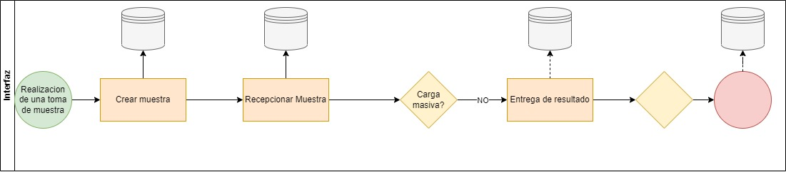
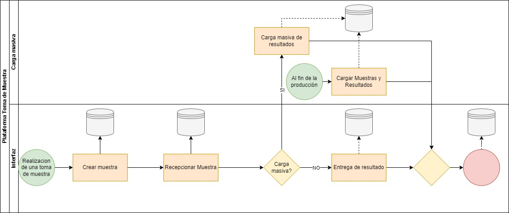

Registro de muestras biologicas
Tabla de contenido
El registro de muestras es un proceso fundamental en el ámbito de la salud, que permite un control riguroso de los pacientes y una gestión eficiente de los recursos. La información recolectada es clave para la detección de enfermedades y la toma de decisiones médicas.
Existen tres maneras de ingresar muestras a la Plataforma Nacional de Toma de Muestras (PNTM): mediante la interfaz web, carga masiva y API.
El registro mediante interfaz corresponde a toda muestra que es ingresada directamente desde tomademuestras.minsal.cl, dentro del registro de interfaz existen tres hitos de registro importantes, los que corresponden a Creación de muestras, Recepción de muestras y Entrega de resultados.
Por otro lado, la carga masiva de muestras y/o resultados es una opción adicional a la carga de información por interfaz o por medio de interoperabilidad. Esto ayuda a laboratorios que no cuentan con la infraestructura necesaria para el registro de información.
El registro mediante API corresponde a toda muestra que es ingresada mediante el uso de Web Service puesto a disposición para generar interoperabilidad entre laboratorios y PNTM. Dentro de los servicios disponibles para el consumo se encuentra la creación de muestras, recepción de muestras y entrega de resultados.

Ingreso vía interfaz web
El registro mediante interfaz corresponde a toda muestra que es ingresada directamente desde tomademuestras.minsal.cl, dentro del registro de interfaz existen tres hitos de registro importantes, los que corresponden a Creación de muestras, Recepción de muestras y Entrega de resultados.

Creación de muestras
El proceso de creación de muestras se realiza por el profesional de toma de muestra y debe registrarse de manera sincrónica en la plataforma PNTM con el usuario respectivo. Para llevar a cabo este proceso, el profesional debe completar todos los campos solicitados por la plataforma.
Recepción de muestras
La recepción de muestras es un proceso llevado a cabo por el laboratorio receptor. Un profesional designado debe ingresar a la plataforma con el perfil de acceso del laboratorio y generar el acto de recepción de muestra. Este proceso también debe registrarse de manera sincrónica en la plataforma.
Entrega de resultados
La entrega de resultados se realiza en el laboratorio y cada muestra procesada debe ser registrada en PNTM. Para llevar a cabo este proceso, un profesional designado debe ingresar a la plataforma con el perfil de usuario de laboratorio y entregar los resultados de manera sincrónica con el acto de entrega.
Carga Masiva
La carga masiva de muestras y/o resultados es una opción adicional a la carga de información por Interfaz o por medio de Interoperabilidad. Esto ayuda a laboratorios que no cuentan con la infraestructura necesaria para el registro de información.

Existen dos métodos para la carga masiva de información: Carga masiva de resultados y Carga masiva de muestras y resultados.
Carga masiva de muestras
Permite a los profesionales de laboratorio cargar un archivo Excel con el identificador de la muestra y el resultado en la columna adjunta.
Carga masiva de muestras y resultados
Permite el registro de ambas informaciones en un solo archivo. Estos métodos ayudan a los laboratorios a registrar la información de manera más rápida.
Registro vía API
El registro mediante API corresponde a toda muestra que es ingresada mediante el uso de Web Service puesto a disposición para generar interoperabilidad entre laboratorios y PNTM. Dentro de los servicios disponibles para el consumo se encuentra la creación de muestras, recepción de muestras y entrega de resultados.
Creación de muestras
Dentro de los métodos de servicio disponibles en el Web Service, existe la creación de muestras. Esta opción permite a todo laboratorio crear muestras mediante el uso de API, lo que facilita y apunta a la integración de procesos desde sistemas informáticos locales de laboratorio (LIS) a PNTM, de esta manera se genera cohesión en el registro en ambos sistemas.
Recepción de muestras
Dentro de los métodos de servicio disponibles en el Web Service, existe la recepción de muestras. Esta opción permite a todo laboratorio recepcionar muestras mediante el uso de API, lo que facilita y apunta a la integración de procesos desde sistemas informáticos locales de laboratorio (LIS) a PNTM, de esta manera se genera cohesión en el registro en ambos sistemas.
Entrega de resultados
Dentro de los métodos de servicio disponibles en el Web Service, existe la entrega de resultados. Esta opción permite a todo laboratorio entregar resultados mediante el uso de API, lo que facilita y apunta a la integración de procesos desde sistemas informáticos locales de laboratorio (LIS) a PNTM, de esta manera se genera cohesión en el registro en ambos sistemas.